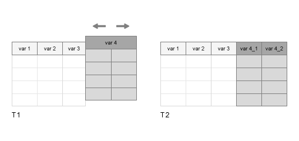

splitvars
Split multicolumn variables in table or timetable
Description
T2 = splitvars( splits all
multicolumn variables in T1)T1 so that they are single-column
variables in T2. All single-column variables from
T1 are unaltered.
If a variable in
T1has multiple columns, thensplitvarsmakes unique names for the new variables inT2from the name of the original variable inT1.If a variable in
T1is a table itself, thensplitvarsuses the names of its variables (and, if necessary, the name of that table) to make unique names for the new variables inT2.

To merge variables into one multicolumn variable, use the mergevars function.
Examples
Input Arguments
Extended Capabilities
Version History
Introduced in R2018a